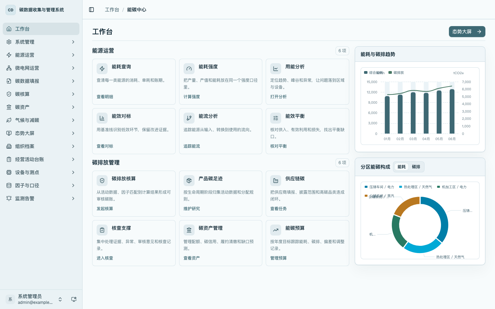
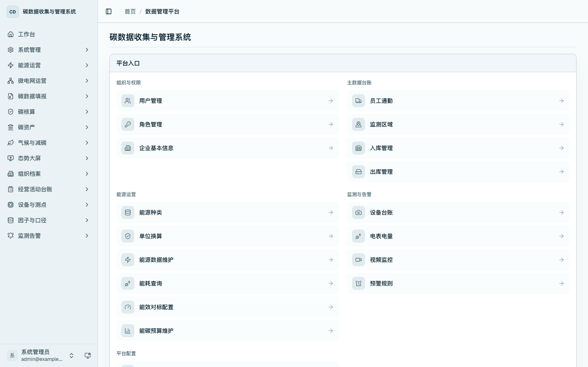
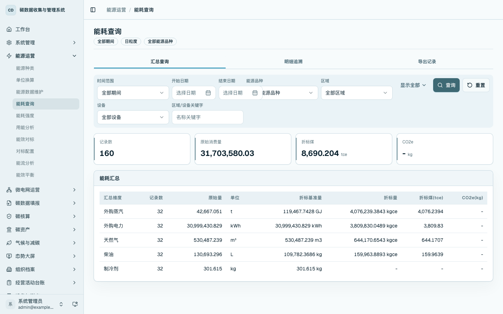

能源运营总览
本章用于说明能源运营相关功能在首页工作台、数据管理入口页和左侧侧边栏中的组织关系。用户可根据工作目标进入对应模块：基础数据在主数据和台账页面维护，运营结果在查询分析页面查看，现场采集在设备、点位和电表页面管理，会议汇报在态势大屏展示。
首页工作台入口
进入 /home，首页工作台在「能源运营」区域展示 6 个常用分析入口：能耗查询、能耗强度、用能分析、能效对标、能流分析和能效平衡。该入口适合日常查看和汇报前快速进入核心分析页面。

首页工作台的能源运营入口对应以下页面：
- 「能耗查询」进入
/energy/consumption，用于按期间、区域、设备和能源品种查询能源消费数据。 - 「能耗强度」进入
/energy/intensity，用于查看综合能耗、面积强度、区域设备层级和趋势。 - 「用能分析」进入
/energy/analysis，用于查看结构、成本、能效、异常和策略建议。 - 「能效对标」进入
/energy/benchmark，用于查看设备或工序的能效对标结果。 - 「能流分析」进入
/energy/flow，用于查看总表、区域、设备和用能系统之间的流向关系。 - 「能效平衡」进入
/energy/balance，用于查看平衡简表、来源分布、优化测算和优化记录。
数据管理入口页
进入 /platform，平台入口页按分组展示常用维护入口。能源运营相关入口分布在「能源运营」「监测与告警」「平台配置」三个分组中。

「能源运营」分组包括能源种类、单位换算、能源数据维护、能耗查询、能效对标配置和能碳预算维护。该分组用于维护能源数据口径、录入能源事实数据、维护分析配置，并进入查询页面查看汇总结果。
「监测与告警」分组包括设备台账、电表电量、视频监控和预警规则。该分组用于维护设备、查看采集结果和配置现场告警规则。
「平台配置」分组中的折标与储能、接口结果 key 映射和能碳中心属于关联入口。折标与储能用于维护能源折标和储能口径；接口映射用于外部接口字段识别；能碳中心用于从综合工作台进入能源、监测、告警等页面。
左侧侧边栏菜单
左侧侧边栏是日常操作的主要入口。能源运营一级菜单展开后，包含能源种类、单位换算、能源数据维护、能耗查询、能耗强度、用能分析、能效对标、对标配置、能流分析和能效平衡。

侧边栏中与能源运营有关的一级菜单和二级菜单如下：
- 「能源运营」：能源种类、单位换算、能源数据维护、能耗查询、能耗强度、用能分析、能效对标、对标配置、能流分析、能效平衡。
- 「组织档案」：监测区域。该页面维护生产基地、仓储区、装卸区、充电区、办公辅助区等区域层级。
- 「设备与测点」：设备台账、点位监测、电表电量、视频监控。该菜单维护设备、测点和电表接入，并查看采集读数。
- 「因子与口径」：折标与储能。该入口维护折标和储能相关口径，排放因子另见因子维护章节。
- 「监测告警」：监测中心、告警中心、预警规则。该菜单用于查看设备运行状态、告警事件和规则配置。
- 「态势大屏」：态势总览、电量监控、能碳协同。该菜单用于汇报展示，不承担日常数据维护。
- 「气候与减碳」：能碳预算、预算维护。该菜单用于查看能耗和碳排预算执行情况，并维护年度目标、月度分解和调整记录。
能源运营章节拆分
本手册按操作关注点拆分能源运营相关内容：
- 「区域、设备与 MQTT 电表接入配置」说明区域层级、设备台账、设备测点、MQTT 表计绑定、点位映射和接入测试。
- 「能源主数据维护」说明能源种类和单位换算。
- 「能源事实数据维护」说明手工新增、详情回显、编辑、CSV 导入、CSV 导出和删除。
- 「能源运营查询与分析」说明能耗查询、能源强度、用能分析、能流分析、能效对标、能效平衡和能碳预算。
- 「能效对标配置」说明标杆方案、标杆项和历史基线生成。
- 「能碳预算维护」说明年度目标、月度分解和调整记录维护。
- 「监测告警与处理留痕」说明监测中心、告警中心、预警规则和告警处理。
- 「态势大屏」说明总览大屏、电量监控和能碳协同展示。
推荐操作顺序
- 在「组织档案 / 监测区域」维护区域层级。
- 在「设备与测点 / 设备台账」维护设备，并将设备挂载到区域。
- 在设备详情中维护测点、MQTT 表计绑定和点位映射。
- 在「能源运营 / 能源种类」「单位换算」维护能源口径。
- 在「能源运营 / 能源数据维护」录入或导入账期能源事实数据。
- 在「能源运营 / 能耗查询」核对能源消费汇总和明细。
- 在「能源运营 / 能耗强度」「用能分析」「能流分析」查看强度、结构、趋势、异常和能流关系。
- 在「能源运营 / 对标配置」维护标杆方案和标杆项，在「能源运营 / 能效对标」查看对标结果。
- 在「气候与减碳 / 预算维护」维护年度目标和月度预算，在「气候与减碳 / 能碳预算」查看执行情况。
- 在「监测告警」查看设备状态、告警事件和处理记录。
- 在「态势大屏」展示能源运营和能碳协同成果。